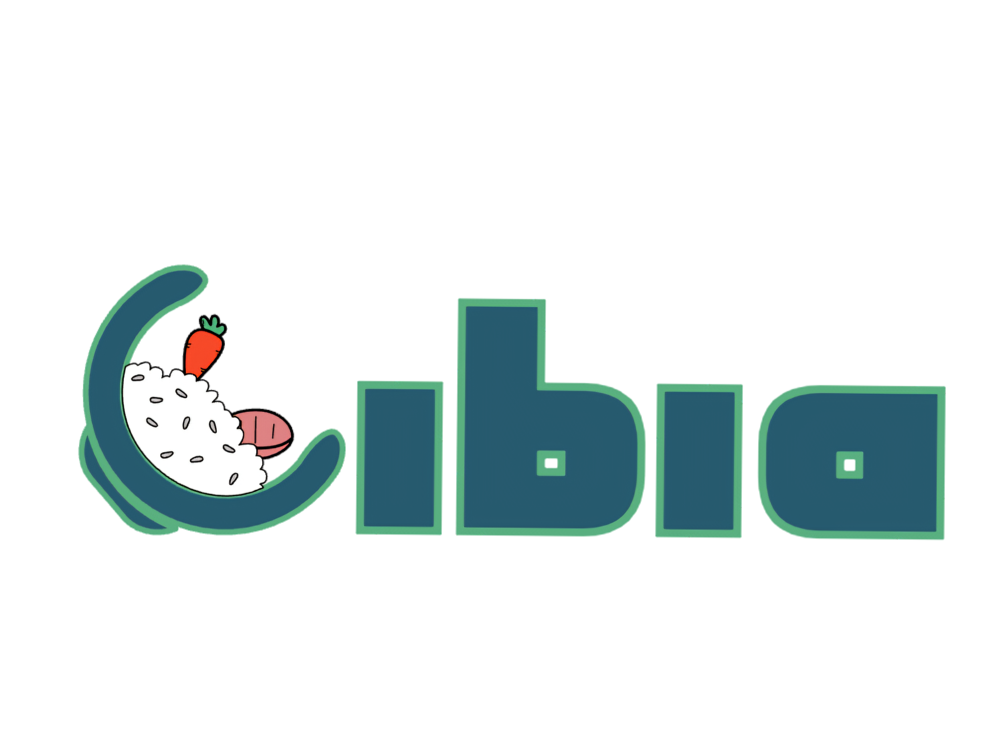

Tes macros parfaites. Ton budget respecté. Zéro prise de tête.

Tes macros parfaites. Ton budget respecté. Zéro prise de tête.

Connecte-toi pour sauvegarder ton plan dans le cloud.
Étant étudiant en deuxième année de diététique et ne vivant plus chez mes parents, j'ai vite compris que lier un petit budget avec une bonne alimentation, autant sur le plan santé que sportif, était compliqué. Heureusement, mon cursus et tout ce que j'apprends en cours me permettent d'apporter une vraie vision diététique et une expertise nutritionnelle fiable au site. Aujourd'hui, il existe bien plusieurs applications ou sites qui peuvent dépanner, mais entre ceux faits entièrement avec l'IA ou d'autres qui aident seulement avec ce que l'on a déjà, aucun n'est vraiment tenable sur le long terme.
Grâce à Cibia, on peut bien manger, dans un budget flexible, et surtout qui comble nos besoins personnels. Plus de prise de tête à compter ses protéines pour les sportifs. Plus d'appréhension face à des plaisirs. Tout est calculé de façon à simplifier le quotidien. Le planning reste personnalisable pour s'adapter en fonction de nos envies.
Avec un ticket fait sur la base de vos préférences, qui rentre dans vos besoins et votre budget, faire vos courses n'a jamais été aussi simple. Le site est encore en développement et est loin d'être fini, mais s'il peut aider quelqu'un dès aujourd'hui, pourquoi attendre ?
Une question sur tes macros, un bug sur l'appli ou juste envie de discuter nutrition ? Hésite pas, je suis dispo !